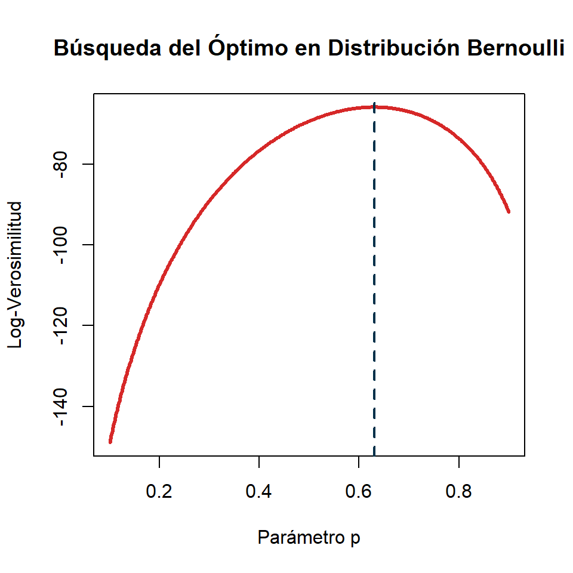

# Configuración inicial de reproducibilidad
set.seed(123)
n <- 100
p_verdadero <- 0.65
# Generación de la muestra
datos <- rbinom(n, size = 1, prob = p_verdadero)
exitos <- sum(datos)
# Definición matemática de la función log-verosimilitud
log_lik_bernoulli <- function(p) {
exitos * log(p) + (n - exitos) * log(1 - p)
}
# Evaluación gráfica sobre un intervalo continuo
p_grid <- seq(0.1, 0.9, length.out = 500)
valores_ll <- log_lik_bernoulli(p_grid)
# Gráfico
plot(p_grid, valores_ll, type = "l", col = "#d62828", lwd = 3,
xlab = "Parámetro p", ylab = "Log-Verosimilitud",
main = "Búsqueda del Óptimo en Distribución Bernoulli")
abline(v = exitos/n, col = "#003049", lty = 2, lwd = 2)Método de Máxima Verosimilitud
Introducción
El método de Máxima Verosimilitud (MLE, Maximum Likelihood Estimation) es un procedimiento de estimación puntual introducido de forma sistemática por el estadístico Ronald A. Fisher a principios del siglo XX.
El objetivo central consiste en estimar un parámetro desconocido \(\theta\) (o un vector de parámetros \(\boldsymbol{\theta}\)) perteneciente a un espacio paramétrico \(\Theta\), maximizando la probabilidad de haber observado la muestra aleatoria obtenida.
Introducción (cont.)
Supongamos que disponemos de una muestra aleatoria \(X_1, X_2, \ldots, X_n\) extraída de una distribución con función de densidad (en el caso continuo) o de masa de probabilidad (en el caso discreto) \(f(x; \theta)\), o bien denotada por \(f(x| \theta)\).
Bajo el supuesto de que las observaciones son independientes e idénticamente distribuidas (i.i.d.), la distribución conjunta de la muestra es el producto de las probabilidades individuales.
La Función de Verosimilitud \(L(\theta)\)
Definimos la función de verosimilitud como la función conjunta de las variables evaluada en los valores muestrales observados \(\mathbf{x} = (x_1, x_2, \ldots, x_n)\), pero considerada como una función matemática del parámetro libre \(\theta\):
\[L(\theta; \mathbf{x}) = f(x_1, x_2, \ldots, x_n; \theta) = \prod_{i=1}^{n} f(x_i; \theta)\] También se puede denotar de esta otra forma:
\[L(\theta | \mathbf{x}) = f(x_1, x_2, \ldots, x_n | \theta) = \prod_{i=1}^{n} f(x_i | \theta)\]
Densidad vs. Verosimilitud
Es vital distinguir conceptualmente la densidad de la verosimilitud:
En la densidad \(f(x; \theta)\), el parámetro \(\theta\) es fijo y la variable es el vector de datos \(\mathbf{x}\).
En la verosimilitud \(L(\theta; \mathbf{x})\), el vector de datos \(\mathbf{x}\) es fijo (ya observado) y la variable bajo estudio es el parámetro \(\theta\).
La Función de Log-Verosimilitud \(\ell(\theta)\)
Dado que maximizar un producto de funciones resulta computacional y analíticamente complejo, se aplica de forma estándar la transformación mediante el logaritmo natural (\(\ln\)).
Puesto que el logaritmo es una función estrictamente monótona creciente en el dominio \((0, \infty)\), el valor de \(\theta\) que maximiza la función de log-verosimilitud es idéntico al que maximiza la función de verosimilitud original:
\[\ell(\theta) = \ln L(\theta) = \sum_{i=1}^{n} \ln f(x_i; \theta)\]
Esta transformación linealiza los productos convirtiéndolos en sumas, simplificando drásticamente el cálculo diferencial posterior.
Algoritmo General de Estimación Analítica
Para encontrar el Estimador de Máxima Verosimilitud (EMV), denotado como \(\hat{\theta}_{\text{MLE}}\), se procede mediante el cálculo diferencial clásico bajo condiciones de regularidad:
- Establecer la ecuación de log-verosimilitud \(\ell(\theta)\) a partir de los datos.
- Derivar la función respecto al parámetro de interés para obtener la función de puntuación (score function): \(S(\theta) = \dfrac{d}{d\theta}\ell(\theta)\).
- Igualar a cero la ecuación de puntuación para hallar el punto crítico candidato: \(S(\hat{\theta}) = 0\).
Algoritmo General (cont.)
- Verificar la condición de segundo orden para garantizar que el punto crítico corresponde a un máximo global. Se evalúa que la segunda derivada (o matriz Hessiana en casos multiparamétricos) sea estrictamente negativa:
\[\left.\frac{d^2}{d\theta^2}\ell(\theta)\right|_{\theta=\hat{\theta}} < 0\]
Ejemplos Resueltos
Ejemplo: Distribución de Bernoulli
Sea \(X_1, X_2, \ldots, X_n\) una muestra aleatoria i.i.d. proveniente de una distribución \(\text{Bernoulli}(p)\), con parámetro de éxito \(p \in (0,1)\). Determine el estimador máximo verosímil de \(p\).
La función de masa de probabilidad para cada observación individual se define como:
\[f(x_i; p) = p^{x_i}(1-p)^{1-x_i}, \quad x_i \in \{0, 1\}\]
Ejemplo: Distribución de Bernoulli (cont.)
Paso 1: Función de verosimilitud
\[L(p) = \prod_{i=1}^{n} p^{x_i}(1-p)^{1-x_i} = p^{\sum_{i=1}^{n} x_i}(1-p)^{n - \sum_{i=1}^{n} x_i}\]
Paso 2: Transformación logarítmica
\[\ell(p) = \left(\sum_{i=1}^{n} x_i\right)\ln(p) + \left(n - \sum_{i=1}^{n} x_i\right)\ln(1-p)\]
Ejemplo: Distribución de Bernoulli (cont.)
Paso 3: Derivación e igualdad a cero
\[\frac{d\ell(p)}{dp} = \frac{\sum_{i=1}^{n} x_i}{p} - \frac{n - \sum_{i=1}^{n} x_i}{1-p} = 0\]
Multiplicando la ecuación por \(p(1-p)\) para simplificar:
\[(1-p)\sum_{i=1}^{n} x_i - p\left(n - \sum_{i=1}^{n} x_i\right) = 0\]
\[\sum_{i=1}^{n} x_i - p\sum_{i=1}^{n} x_i - np + p\sum_{i=1}^{n} x_i = 0 \implies \sum_{i=1}^{n} x_i = np\]
\[\hat{p}_{\text{MLE}} = \frac{\sum_{i=1}^{n} x_i}{n} = \bar{X}\]
Ejemplo: Distribución de Bernoulli (cont.)
Paso 4: Verificación del máximo
\[\frac{d^2\ell(p)}{dp^2} = -\frac{\sum_{i=1}^{n} x_i}{p^2} - \frac{n - \sum_{i=1}^{n} x_i}{(1-p)^2}<0\]
Dado que \(x_i \in \{0,1\}\), los numeradores son positivos o nulos y los denominadores son estrictamente positivos para \(p \in (0,1)\), por lo tanto la segunda derivada es estrictamente menor que cero.
Resultado: \(\hat{p}_{\text{MLE}} = \bar{X}\) (la media muestral) es el estimador de máxima verosimilitud único.
R/ \(\hat{p}_{\text{MLE}} = \bar{X}\)
Ejemplo: Distribución de Poisson
Sea \(X_1, X_2, \ldots, X_n\) una muestra aleatoria i.i.d. de una población \(\text{Poisson}(\lambda)\), donde \(\lambda > 0\). Determine el estimador de máxima verosimilitud del parámetro \(\lambda\).
Su función de masa de probabilidad es:
\[f(x_i; \lambda) = \frac{e^{-\lambda}\lambda^{x_i}}{x_i!}, \quad x_i \in \{0, 1, 2, \ldots\}\]
Ejemplo: Distribución de Poisson (cont.)
Paso 1: Función de verosimilitud
\[L(\lambda) = \prod_{i=1}^{n} \frac{e^{-\lambda}\lambda^{x_i}}{x_i!} = \frac{e^{-n\lambda}\lambda^{\sum_{i=1}^{n} x_i}}{\prod_{i=1}^{n} x_i!}\]
Paso 2: Función de log-verosimilitud
\[\ell(\lambda) = -n\lambda + \ln(\lambda)\sum_{i=1}^{n} x_i - \sum_{i=1}^{n} \ln(x_i!)\]
Ejemplo: Distribución de Poisson (cont.)
Paso 3: Obtención de puntos críticos
\[\frac{d\ell(\lambda)}{d\lambda} = -n + \frac{\sum_{i=1}^{n} x_i}{\lambda} = 0 \implies n = \frac{\sum_{i=1}^{n} x_i}{\lambda} \implies \hat{\lambda}_{\text{MLE}} = \bar{X}\]
Paso 4: Segunda derivada
\[\frac{d^2\ell(\lambda)}{d\lambda^2} = -\frac{\sum_{i=1}^{n} x_i}{\lambda^2} < 0\]
Confirmando que el estimador es óptimo y corresponde a la media muestral.
R/ \(\hat{\lambda}_{\text{MLE}} = \bar{X}\)
Ejemplo: Distribución Exponencial
Sea \(X_1, X_2, \ldots, X_n\) una muestra aleatoria continua i.i.d. extraída de una distribución exponencial con tasa \(\lambda > 0\). Determine el estimador de máxima verosimilitud para \(\lambda\).
Su función de densidad es:
\[f(x_i; \lambda) = \lambda e^{-\lambda x_i}, \quad x_i \geq 0\]
Ejemplo: Distribución Exponencial (cont.)
Paso 1: Función de verosimilitud
\[L(\lambda) = \prod_{i=1}^{n} \lambda e^{-\lambda x_i} = \lambda^n e^{-\lambda \sum_{i=1}^{n} x_i}\]
Paso 2: Log-verosimilitud
\[\ell(\lambda) = n\ln(\lambda) - \lambda\sum_{i=1}^{n} x_i\]
Ejemplo: Distribución Exponencial (cont.)
Paso 3: Derivación y despeje analítico
\[\frac{d\ell(\lambda)}{d\lambda} = \frac{n}{\lambda} - \sum_{i=1}^{n} x_i = 0 \implies \frac{n}{\lambda} = \sum_{i=1}^{n} x_i \implies \hat{\lambda}_{\text{MLE}} = \frac{n}{\sum_{i=1}^{n} x_i} = \frac{1}{\bar{X}}\]
La tasa estimada es el valor recíproco de la media de los tiempos muestrales. Su segunda derivada \(-\dfrac{n}{\lambda^2}\) es inequívocamente negativa.
R/ \(\hat{\lambda}_{\text{MLE}} = \dfrac{1}{\bar{X}}\)
Implementación en R
Curva de Log-Verosimilitud para una Distribución Bernoulli
El siguiente script simula datos de una distribución Bernoulli con parámetro \(p=0.65\) y genera el gráfico de la curva de log-verosimilitud para identificar gráficamente el punto máximo.

Curva de Log-Verosimilitud para una Distribución Bernoulli

Propiedades Asintóticas del EMV
Propiedades Asintóticas del EMV
Bajo condiciones de regularidad estadística generales (diferenciabilidad y soporte no dependiente del parámetro), el estimador de máxima verosimilitud \(\hat{\theta}\) posee excelentes propiedades a medida que el tamaño muestral tiende al infinito (\(n \to \infty\)):
Consistencia
El estimador converge en probabilidad al verdadero parámetro de la población:
\[\hat{\theta}_n \xrightarrow{p} \theta_0 \quad \text{cuando } n \to \infty\]
Eficiencia Asintótica
El estimador alcanza asintóticamente la Cota Inferior de Cramér-Rao, lo que significa que posee la menor varianza posible entre todos los estimadores consistentes:
\[\lim_{n\to\infty} \text{Var}(\hat{\theta}) = \frac{1}{I_n(\theta_0)}\]
Donde \(I_n(\theta_0)\) representa la Información de Fisher de la muestra.
Normalidad Asintótica
La distribución muestral del estimador tiende a aproximarse a una distribución gaussiana a medida que la muestra crece:
\[\sqrt{n}\,(\hat{\theta}_n - \theta_0) \xrightarrow{d} N\!\left(0,\, \frac{1}{I_1(\theta_0)}\right)\]
Esta propiedad fundamenta analíticamente la formulación de intervalos de confianza y pruebas de hipótesis estadísticas.
Ejercicios Propuestos
Ejercicios
Distribución Normal (\(\mu\)): Suponga que se tiene una muestra aleatoria de una población \(X \sim N(\mu, \sigma^2)\) donde el parámetro de varianza \(\sigma^2\) es conocido. Deduzca formalmente que el estimador de máxima verosimilitud de la media es la media muestral, es decir, \(\hat{\mu} = \bar{X}\).
Distribución Geométrica: Sea \(X_1, X_2, \ldots, X_n\) una muestra aleatoria independiente extraída de una distribución geométrica cuya función de masa es \(f(x;p) = (1-p)^{x-1}p\). Determine analíticamente el estimador del parámetro de éxito \(\hat{p}\).
Distribución Uniforme Continua: Sea \(X \sim U(0, \theta)\) con densidad \(f(x) = 1/\theta\) para \(0 \leq x \leq \theta\). Determine el estimador máximo verosímil para \(\theta\). Pista: En esta distribución, el soporte depende de \(\theta\), por lo que no basta con derivar la verosimilitud respecto de \(\theta\). Para una muestra \(x_1,\dots,x_n\), la verosimilitud es proporcional a \(1/\theta^n\) siempre que \(\theta \geq x_i\) para toda observación. Como \(1/\theta^n\) disminuye al aumentar \(\theta\), el máximo se alcanza tomando el menor valor de \(\theta\) que sea compatible con todos los datos. ¿Cuál es ese valor?.
Distribución Rayleigh: Con densidad \(f(x;\sigma) = \dfrac{x}{\sigma^2}e^{-x^2/(2\sigma^2)}\) para \(x \geq 0\). Encuentre el estimador de máxima verosimilitud para \(\sigma\).
Referencias
- Casella, G., & Berger, R. L. (2002). Statistical Inference (2nd ed.). Duxbury Press.
- Hogg, R. V., McKean, J., & Craig, A. T. (2018). Introduction to Mathematical Statistics (8th ed.). Pearson.
- Mood, A. M., Graybill, F. A., & Boes, D. C. (1974). Introduction to the Theory of Statistics (3rd ed.). McGraw-Hill.